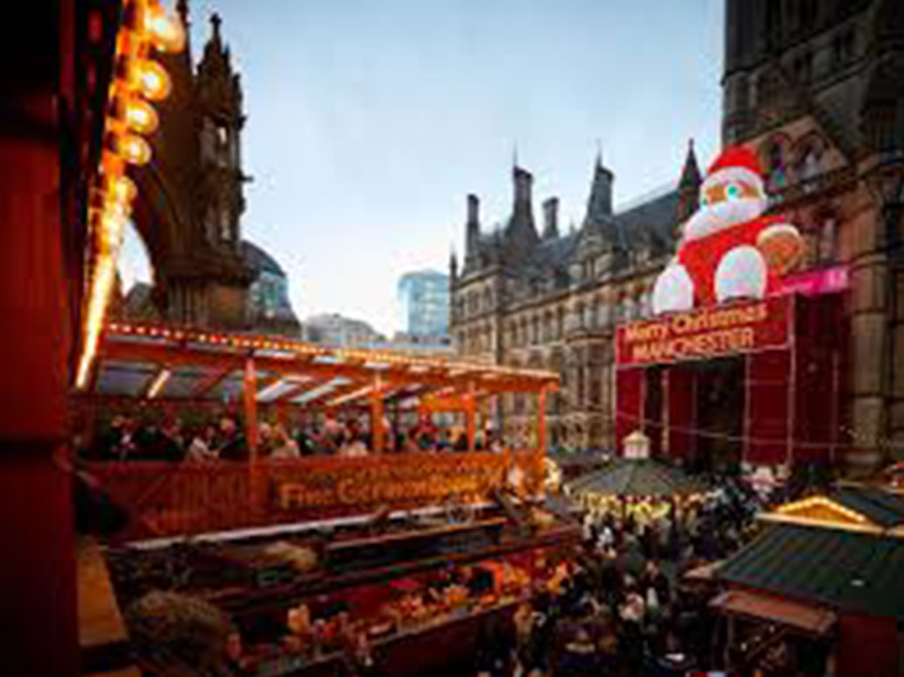

Whether you’re a die-hard football fan, planning a visit with your family or on a weekend break to the great city of Manchester, enjoy the National Football Museum which is currently open Thursday to Sunday. Test your skills at everything from penalty kicks and clever tricks to commentating, and get your photograph with the museum’s Premier League trophy. The museum has a range trails available, with a host of family-friendly activities running across weekends and throughout school holidays.
